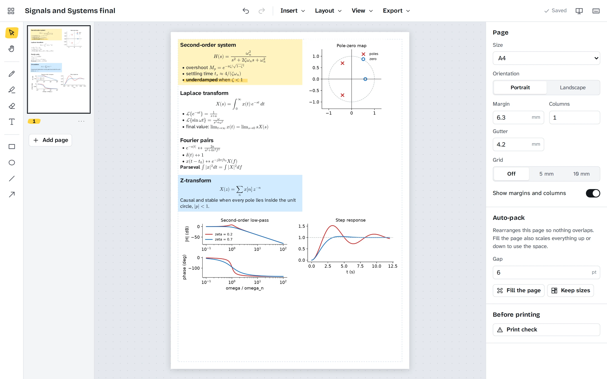
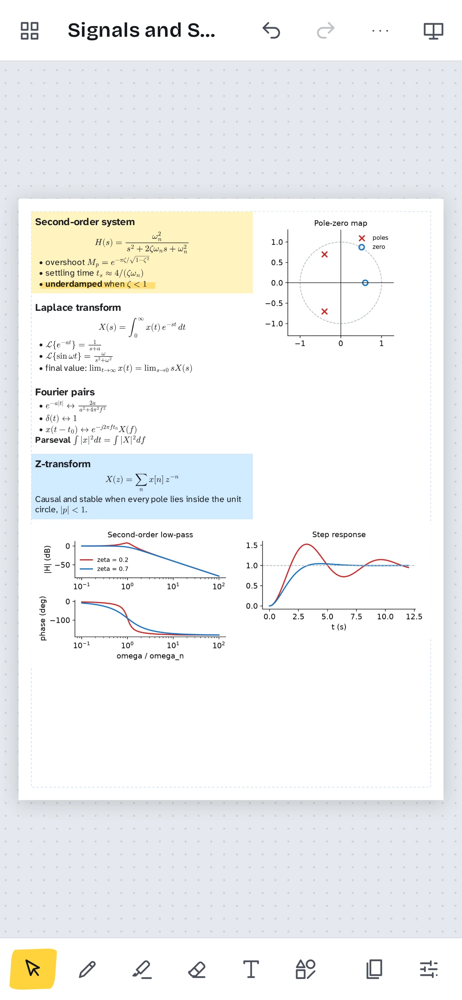

Paste, crop, done
Paste a screenshot with Ctrl+V or drop image files on the page. Double-click to crop; the rest of the image stays there, so you can widen the crop again later.
Paste screenshots, cut regions straight out of lecture PDFs, type notes and LaTeX, then let auto-pack fit everything onto the page. Export a PDF and print it. Free, open source, and your work never leaves your device.
Runs in any modern browser and installs from it. Native apps for Windows, macOS, Linux and Android.

Built for the night before the exam, when the allowed sheet is one page and everything has to fit.
Paste a screenshot with Ctrl+V or drop image files on the page. Double-click to crop; the rest of the image stays there, so you can widen the crop again later.
Open a lecture PDF, flip to the slide, drag a box around the derivation you need and add it. Each box becomes a sharp image at the resolution you choose.
Text boxes take light Markdown and LaTeX: $\frac{a}{b}$ inline, $$...$$ for a centred formula, bullet lists, bold and code. Rendered by MathJax, so it looks like the textbook.
One click rearranges the page so nothing overlaps. Fill the page scales everything up as far as it fits; keep sizes packs tightly and spills onto a new page.
Turn white backgrounds transparent, invert dark-theme slides, go grayscale, raise the contrast, or trim the empty margins off a screenshot in one click.
Pen with pressure for stylus and Apple Pencil, a real highlighter that multiplies over the ink, arrows, boxes and an eraser for strokes.
Before you print, it lists images that will come out below 150 DPI and text smaller than 5 pt, and shows the page at its real size.
Snap guides, a grid, column guides, rotation, align and distribute, layers, and page sizes from A5 to A3 in either orientation.

The layout changes for small screens: tools along the bottom, pages and settings in sheets you pull up. Draw with a finger or a stylus, pinch to zoom, and take a photo of the whiteboard straight onto the page.
Install it from the browser on any phone, or get the Android app from the releases page.
The web app needs nothing installed and works offline after the first visit. The native apps are the same editor with native save dialogs.
Open the web app in Chrome, Edge, Firefox or Safari. In Chrome and Edge, the install button in the address bar adds it to your apps.
CheatsheetMaker_x64-setup.exe installs for your user only. It is not code-signed, so SmartScreen asks once: More info, then Run anyway. An .msi is there too.
CheatsheetMaker_universal.dmg runs on Apple silicon and Intel. It is not notarised: the first time, right-click the app and choose Open.
cheatsheet-maker_x86_64.AppImage runs anywhere after chmod +x. On Debian and Ubuntu, sudo apt install ./cheatsheet-maker_amd64.deb.
cheatsheet-maker.apk for Android 7 and newer. Your browser asks once to allow installing apps from it.
Open the web app in Safari, tap Share, then Add to Home Screen. It opens full screen and works offline.
Every file, with checksums: latest release.
Everything you make is stored in your browser or in the app on your device. There is no account, no server, no analytics and no cookies. To move a sheet to another device, save a .cheatsheet file and open it there. The privacy page has the details.
A zip with the document as JSON and every image in it, so a sheet is one file you can back up, send or open on another device. The format is documented in the repository.
Use the Narrow font for density and Sans (Atkinson Hyperlegible) when legibility matters. Run the print check: it warns below 5 pt. Print at 100% scale, not "fit to page".
The desktop app finds the old autosave and offers to import it. On any other platform, open ~/.config/cheatsheet-maker/autosave.json with Open file on the library screen.
Yes. Issues and pull requests are welcome on GitHub; the contributing guide explains the layout of the code and how to run the tests.